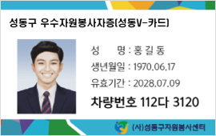
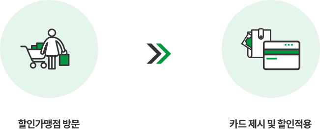
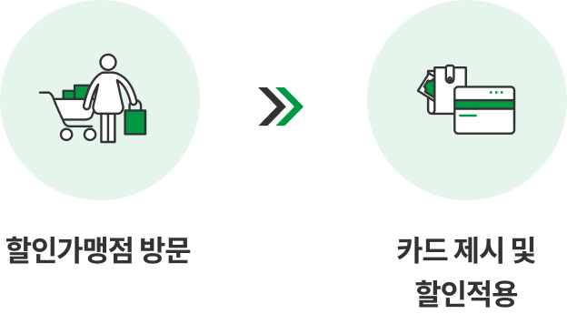
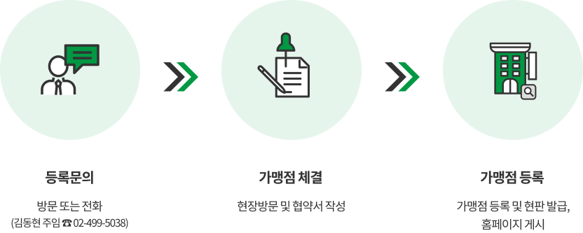
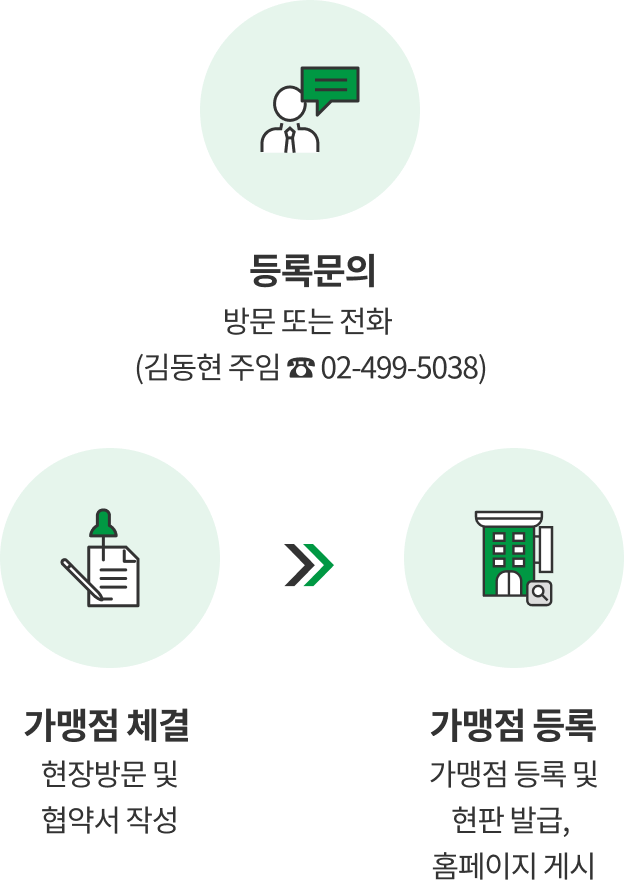

특성화사업
성동V-카드&착한가게
성동V-카드
-
‘성동V-카드’
1365자원봉사포털 기준 소속센터가 성동구인 우수자원봉사자를 대상으로 연 50시간 이상
봉사활동에 참여한 우수자원봉사자에게 발급되는 증명카드 입니다.
본 카드 소지자에게는 성동형우수자원봉사자 인정보상사업 참여기회 및 다양한 혜택이 부여됩니다. -
성동V-카드 혜택
- 우수자원봉사자 할인가맹점 ‘착한가게’ 이용시 할인혜택 제공
- 문화예술시설 50% 감면
- 자치회관 프로그램 20% 감면
- 체육시설 30% 감면
- 공영주차장 20%감면
*성동구 관내 시설 기준 -
사용기간
*2025년 2월 28일까지
-
발급방법
- 자원봉사센터 방문신청
- 이메일접수(sdvolunteer@sd.go.kr) -
카드 사용방법

 카드 제시 및 할인적용" class="mobileHide">  카드 제시 및 할인적용" class="mobileShow">
착한가게
-
‘착한가게’
성동구 내 우수자원봉사자의 활동을 격려하고 자원봉사자와 함께 나눔을 실천하며
더불어 사는 성동을 만드는 자원봉사자에게 할인 및 다양한 서비스를 제공하는 사업체 -
‘착한가게’ 가맹점 혜택
- 성동V-카드 할인가맹점 인증 현판제공
- 성동구 자원봉사자 대상 지속적인 가게 홍보 및 센터 홈페이지 착한가게로 업체명 게시
- 지역사회와 함께 동행하는 건강한 가게로서의 이미지 확산
- 지역사회 나눔 실천 -
가맹점 참여방법
- 대상 : 성동구 관내 모든 사업체
- 모집 및 운영기간 : 상시운영
등록절차
 가맹점 체결 현장방문 및 협약서 작성 > 가맹점 등록 가맹점 등록 및 현판 발급, 홈페이지 게시" class="mobileHide">  가맹점 체결 현장방문 및 협약서 작성 > 가맹점 등록 가맹점 등록 및 현판 발급, 홈페이지 게시" class="mobileShow">